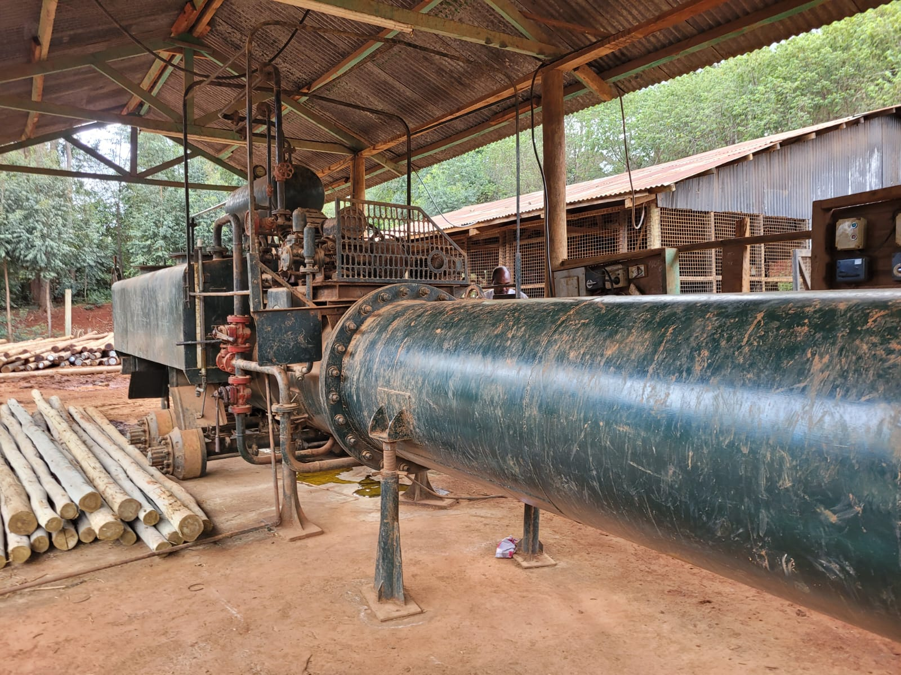
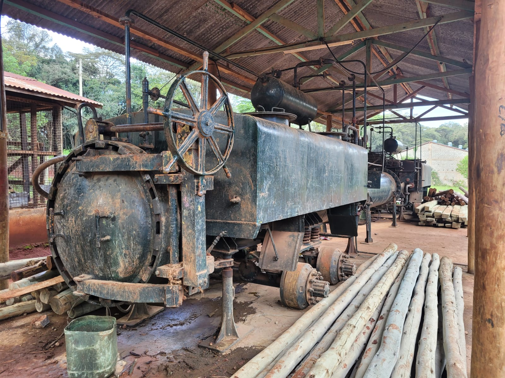
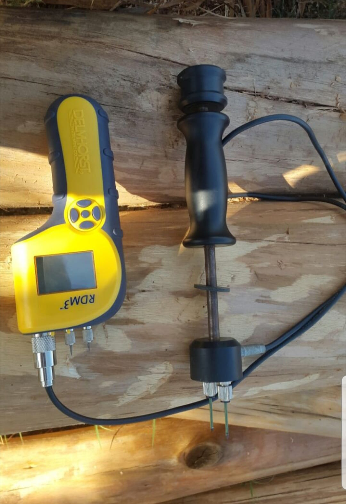
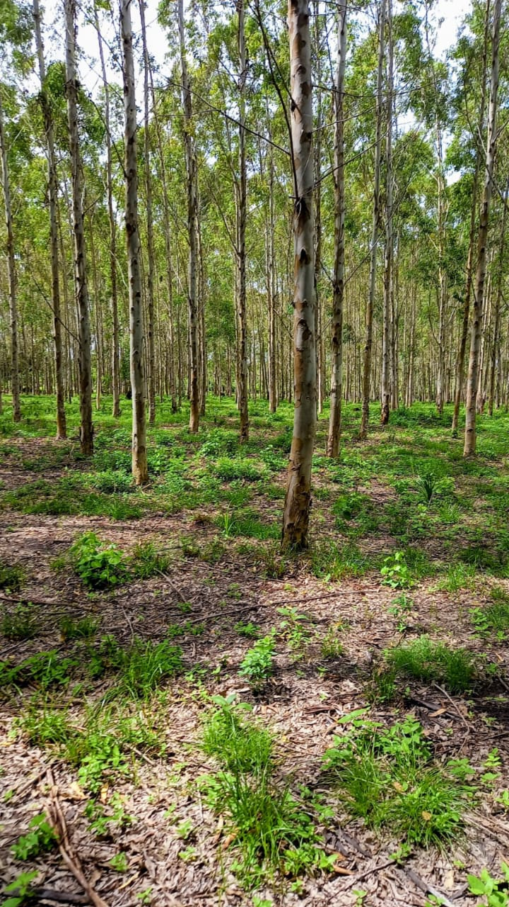
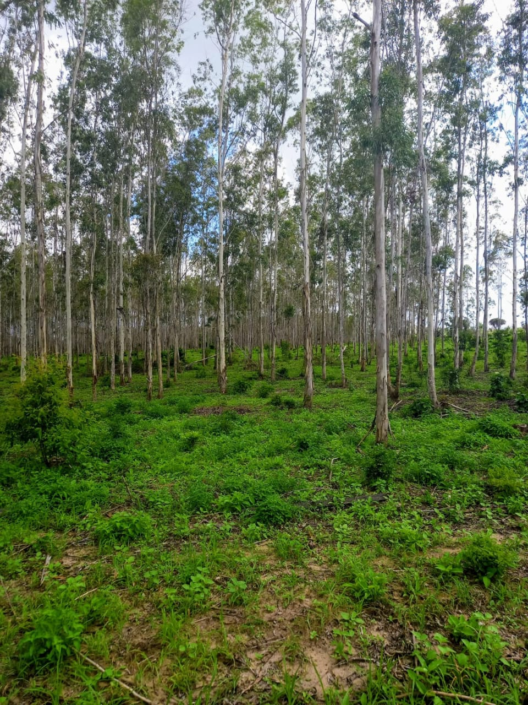
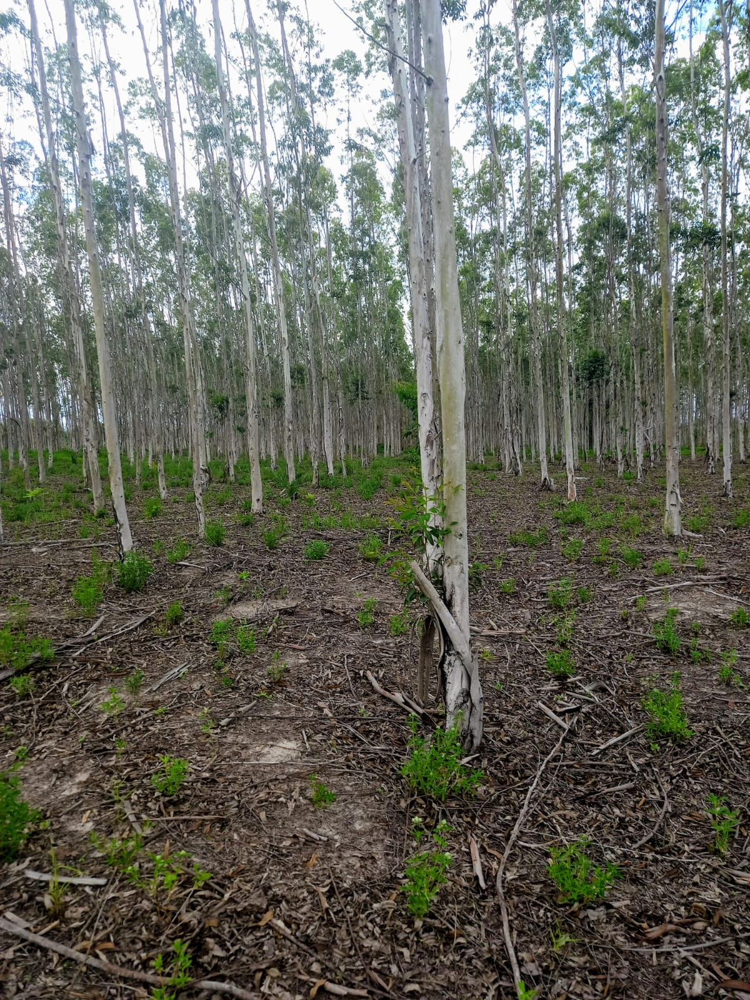
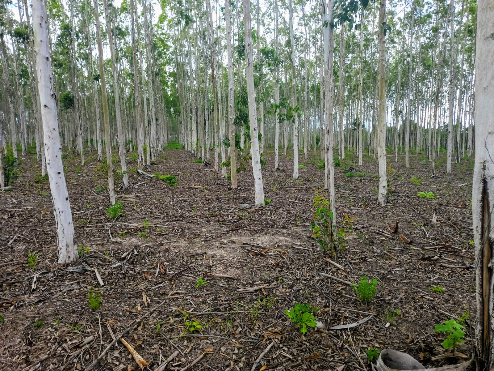
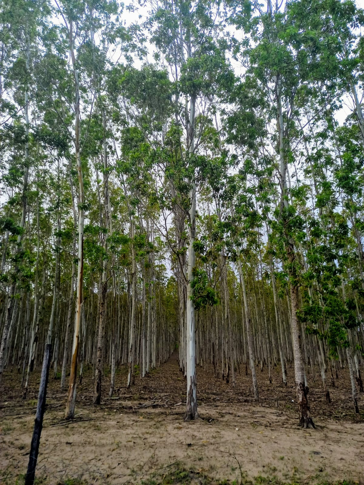
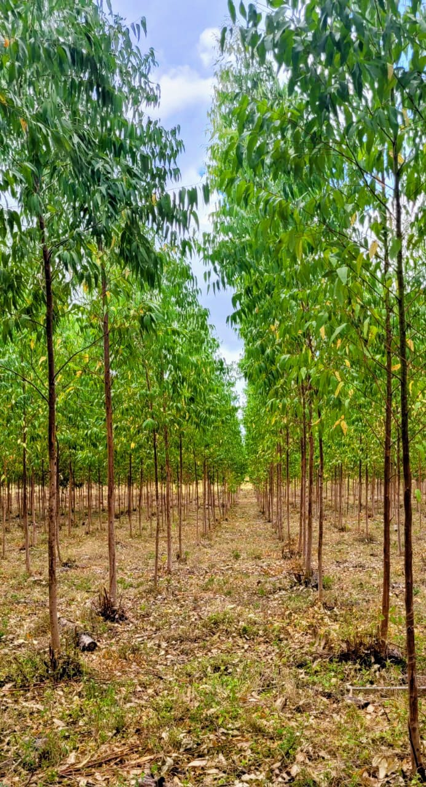
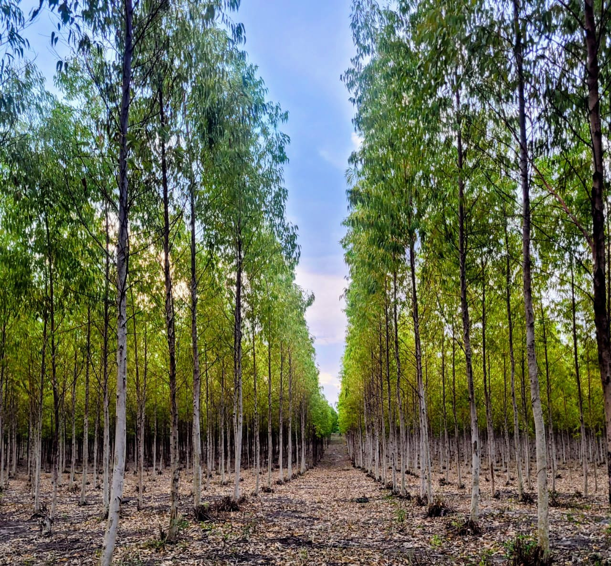

About Us
Intrepids Treated Poles Ltd is a leading manufacturer of wooden poles, specializing in power transmission poles, utility/communication poles, fencing posts, and other wooden construction poles.
We offer environmentally friendly treatments that extend the service life of wood-based construction poles.
Used effectively to offer protection from wood bio-degraders like fungal decay and pests.
MISSIONSTATEMENT
- Our mission is to sustainably harness wood and enhance its service life.
- We are committed to excellence, integrity and environmental stewardship in all aspects of our operations.
OURCOREVALUES
- High quality products
- Sustainability
- Customer focus
- High integrity
- Innovation
- Accountability and Transparency
TREATMENTPROCCESS
- Our pole processing begins with well-managed plantations, where trees are grown, harvested at maturity (8-15 years), and carefully selected for quality. The harvested poles are graded, debarked, and air-dried for up to six months to achieve the recommended 28% moisture content.
- This is followed by a pressure treatment process using Copper Chromium Arsenic (CCA), a highly effective wood preservative. The poles are loaded into a sealed treatment cylinder, where a vacuum removes air and moisture, allowing deeper penetration of the preservative.
- Under high pressure, CCA is forced into the wood structure, providing long-lasting protection against decay, insects, and harsh weather. Excess preservative is safely recovered or disposed of in accordance with NEMA environmental standards. This ensures durable, high-quality poles ready for fencing, electricity, construction and telecommunication use.
TREATMENTMACHINERY
Treatment Chamber


Digital Wood Moisture Meter

TREE PLANTATIONS
- Nested in the fertile coastal region of Lamu, our plantations are purposefully established to grow high-quality trees ideal for treated pole production. The region’s favorable climate and rich soils support healthy, fast-growing trees with strong, straight trunks-perfect for utility, fencing and construction use.
- Managed under sustainable forestry practices, our plantations follow strict guidelines from KFS and KEFRI, ensuring environmental responsibility, biodiversity conservation and long-term productivity.
- From seed selection to maturity, we maintain rigorous standards to guarantee a consistent supply of premium poles that meet both local and international requirements.






FROM STUMP TO STEM: THE CYCLE CONTINUES
- At Intrepids Treated Poles LTD, sustainability is at the core of Lamu tree plantations. Unlike clear-cutting methods, our trees are selectively harvested in a way that encourages natural regrowth. Once a mature tree is cut, the stump remains alive and sends out new shoots—allowing the stem to regenerate without the need for replanting.
- This method, known as coppicing, ensures that we maintain a continuous and healthy cycle of growth while preserving soil structure and minimizing environmental impact. It’s a clear reflection that we don’t just cut trees—we nurture a renewable resource with long-term vision and care.

